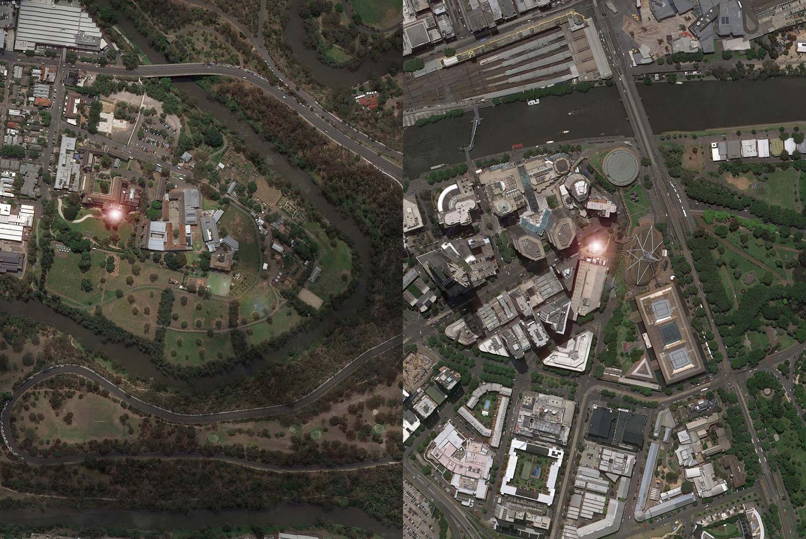

Archive / Research project
c3/Testing Grounds: 2 Signals
- When
- 2017
- Venue
- c3 Contemporary Art Space / Testing Grounds
- Curator
- Anabelle Lacroix
- Research director
- Maria Miranda
Project overview
c3/Testing Grounds: 2 Signals, Jon Butt + c3.
Internet connected LED beacons, motion sensors, 2017 (technical assistance by Alexander Radesvki & Ryan Ralph)
Work presented in tandem with Benjamin Woods for c3's contribution

The work
You are both in this space and the other space.
Internet-enabled RGB LED beacons are situated at c3 and Testing Grounds and remain connected at all times. A sensor in each gallery space activates the system. If you are in one space, you will set off the sensor, send a signal through a number of internet pathways and the light beacon will pulse at the other space. You are both in this space and the other space.
The exhibition
How does place matter for artists?
Set as a material conversation between Artist Run Initiatives (ARI’s) and Aboriginal Art Centres in Australia and the Asia-Pacific, this project embodies and provokes conversations about place: How does place matter for artists? Why do ARIs exist in specific places? What is the place of practice?
Writer Chris Kraus’s ‘radical localism’ points to the importance of the local places of art-making compared to global-centrism noting that ARIs create “an opportunity to remain in one’s own community and assert an alternative ethos.” This ethos is crucial to the survival of art because ARIs create a sustainable and rich culture built from the ground up.
This exhibition includes creative responses from AirSpace Projects, Articulate Project Space, BUS Projects, BLINDSIDE, Boomalli Aboriginal Artists Cooperative, c3 Contemporary Art Space, Cementa, FELTspace, One Place After Another, Open-Contemporary Art Center (Taipei), Raygun Projects, Ruang MES 56 (Yogyakarta), Trocadero Art Space, The Laundry Art Space, The Walls, Waringarri Arts, Watch This Space, West Space and more…